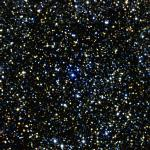

<div data-role="page" id="m21" data-theme="a">

	<div data-role="header">
		<a href="#home" data-icon="back" data-rel="back">Back</a>
		<h1>M21</h1>
		<a href="#home" data-icon="home">Home</a>
	</div>

	<div data-role="content">
		
		<div>
			<h2>
				M21: Open Cluster in
				<a href="../constellations/sagittarius.html" class="m2c">Sagittarius</a>
			</h2>


			Magnitude 6.5. Young cluster. 4.6 million years old. Contains about
			57 stars. Contains a number of blue giants but most of the stars are
			pretty dim.


			<p>Image Credit: 2MASS/UMass/IPAC-Caltech/NASA/NSF.
		</div>
	</div>
</div>